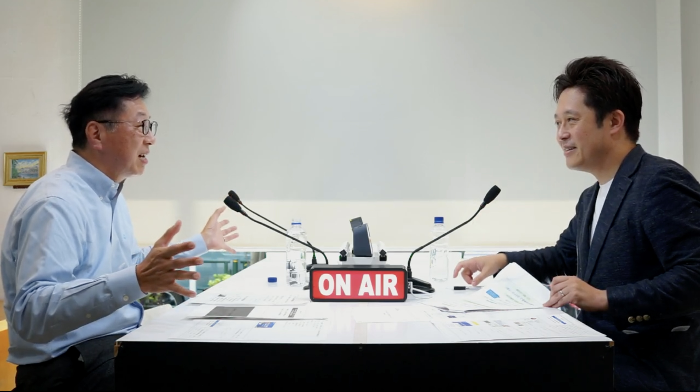
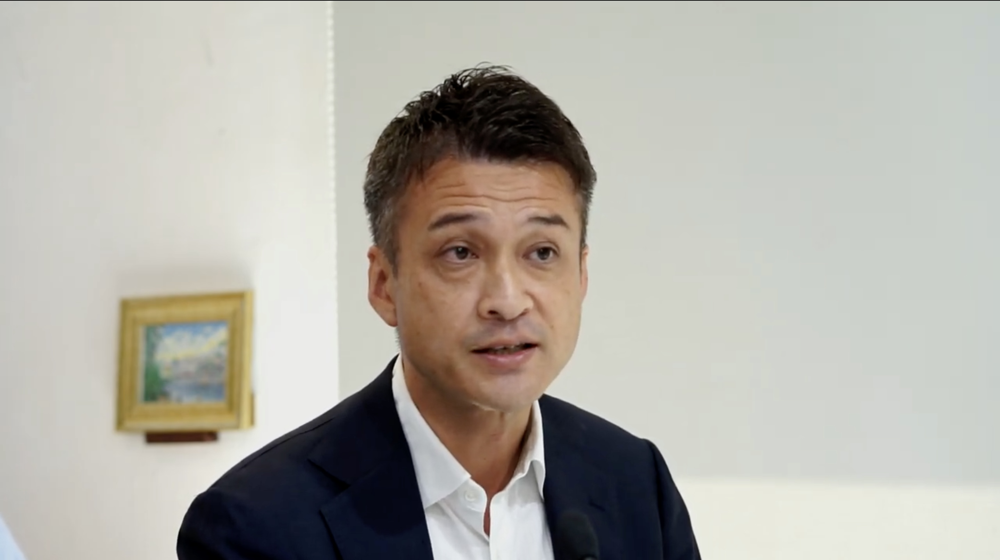

グローバル人材育成の課題とは？
人事に求められる取り組みや役割を解説【セミナー動画】
公開日：
更新日：
グローバル化したビジネス環境において日本企業が勝ち抜くための人材育成が大きな経営課題になっています。企業の人事部門は、どのようなアプローチで人材育成に取り組めばいいのでしょうか？日本経済新聞 人材・教育事業ユニットは、人材育成領域のプロフェッショナルでHRファーブラ代表取締役の山本紳也さんをゲストに迎え、経営層／人事・研修担当者向けセミナー『グローバル人材育成をどう実践していくのか～プロが語るHR部門の課題と役割～』を開催しました。セミナー後半では、企業の人事部門にグローバル人材育成の施策提案を行なっている日本経済新聞の北村大輔さんにも加わってもらい、実践的なアプローチと本質的なグローバル人材育成における人事部門の果たすべき役割について、現状と課題を掘り下げて解説してもらいました。聞き手は、東レおよびソニーにて海外事業の新規市場開拓に従事し、現在は複数の企業の組織開発支援を行うトイトイ合同会社の代表を務める永島寛之さんです。
▽登壇者プロフィール
スピーカー
山本 紳也 氏
株式会社HR ファーブラ 代表取締役 上智大学 非常勤教授・立命館アジア太平洋大学・大学院 非常勤教授 一橋大学大学院 非常勤講師・筑波大学大学院 客員教授 IMD Learning Manager & Executive Coach
組織・人材マネジメント戦略に関わるコンサルティングに約30 年従事。 ビジネス戦略達成のための組織・人材マネジメント、組織開発、チェンジマネジメント、グローバルxVUCA 時代のリーダー開発、M&A における組織人事サポート等に経験豊富。
1999 年3 月から2014 年6 月まで、プライスウォーターハウスクーパース（PwC ）ジャパンにおいてパートナーとして人事・チェンジマネジメント部門をリード。
それ以前は、電機メーカー、外資系人事コンサルティング会社に勤務。 慶應義塾大学理工学部管理工学科卒、イリノイ大学経営学修士課程修了（ＭＢＡ）
ファシリテーター
永島 寛之 氏
トイトイ合同会社代表
中央大学 企業研究所 客員研究員
東レおよびソニーにて海外事業の新規市場開拓に従事。
米国駐在（ソニーUSA）を経て、ニトリに入社。似鳥昭雄会長元で人事責任者として、タレントマネジメントの観点から、採用、育成、人事制度改革を指揮。
その後、再生エネルギー発電所開発のレノバ（東証プライム）にて、執行役員／CHROとして中長期の事業戦略と連動した人材戦略を立案・実行。
2023年２月にトイトイ合同会社を創立。複数の企業の経営者の元で、「個人の成長」を起点とした未来組織開発を支援している。
そもそもグローバル人材の定義とは？
グローバル人材育成の第一歩としてまず取り組むべきことは、「グローバル人材の定義」
を明確にすることです。会社が描く未来像がそれぞれ違うように、グローバル人材の定義も会社によって異なります。定義を明確にした上で、経営層・人事部門・現場マネージャー・従業員が同じ理解をもって進むことが重要です。
▶︎グローバル人材の定義を決めずに進めない
永島さんグローバル人材育成について、山本さんが感じている現状の課題感を教えてください。
山本さん世界に目を向けると、特に欧州などでは、すでに「グローバル」という言葉は使われなくなってきています。ビジネスの世界では、もうグローバルが当り前だからです。日本では「グローバル人材」という言葉が頻繁に飛び交っていますが、「そもそもグローバル人材とは？」という定義もできていない状況です。グローバル人材が「何のために必要なのか？」「どんな人なのか？」に対して、経営層・人事部門・現場マネージャー・従業員の考えが一致していないことも多いと感じます。
永島さんグローバル人材の定義を明確にするには、何をすればいいですか？
山本さん「何のためにどんな人が必要なのか？」は会社によって違うので、グローバル人材の定義もそれぞれの会社が自由に決めればいいことです。問題は、定義を決めないまま「グローバルで活躍できる人を育てよう」とすることです。グローバル人材の定義は、事業や場面によっても変わるので、本人・上司・人事担当者が同じ理解になるように、会社として統一しておくことが重要です。
▶︎実践的なグローバル人材の7つの条件
永島さん山本さんが提案している「実践的なグローバル人材の7つの条件」について教えてください。
- 「専門性」を身につけ活かす
- 「論点」を捉え「論理思考」で説明する
- 話し合いではなく「議論」をする
- 他人との「違い」を楽しむ
- 仕事も趣味も積極的に「経験」する
- 客観性だけでなく「感性」を大切にする
- 自らを深く理解し、「自分軸」を持つ
山本さん「1」については、「英語ができる」「異文化を理解している」という人でも、海外赴任では派遣先や現地のパートナーから「この人はどんな専門性のある人なのか？」と見られるので、英語は片言でもいいですが、専門的なスキルは必須ということです。「2」「3」については、日本はハイコンテクストで「阿吽の呼吸」が通じますが、ローコンテクストなグローバル環境では自分の考えを論理的に説明して相手に伝えられなければ通じないということです。「4」「5」「6」は、グローバルで働くこと、常識の異なる人たちと一緒にいることを、純粋に楽しめるかです。最後の「7」は、会社の肩書ではなく個人が見られるグローバル環境で、「自分は何を大切にしているか。何を成し遂げたいか」という軸をしっかり示せるかということです。
グローバル人材育成の課題とは？
グローバル人材育成に取り組む上で、多くの企業に見られる課題が「目的意識の欠如」です。会社としても個人としても成果や成長につながる結果を得るためには、「何のためにやるのか？」を常に意識して臨む必要があります。
▶︎会社側の課題は「目的の明確化」
永島さんグローバル人材育成について、会社側の具体的な課題を教えてください。
山本さん「何のため？」という目的意識が弱いと感じます。グローバル人材を育成して「ビジネスは成功するのか？」「会社は成長するのか？」という視点が欠けています。「企業や事業をグローバル化するために何が必要か？」なくして、「どんなグローバル人材が必要か？」は語れません。何を目指すかで必要な人材も変わってくるはずです。大切なのは、会社や事業の未来像にはどんな人材が必要かが明確になっていて、経営層も人事部門も現場マネージャーも従業員もそれを同じ軸で語れることなのです。
▶︎個人側の課題は「キャリアオーナーシップ」
永島さんグローバル人材育成について、個人側の具体的な課題を教えてください。
山本さん前提として、「どんな人生を送りたいのか？」「どんなキャリアを築きたいのか？」という、いわゆるキャリアオーナーシップが大切です。グローバル人材を目指すにしても、先ほど紹介した7つの定義を満たせばいいとは限りません。英語ができればいいのか、様々な国の人と仲良く付き合えるようになりたいのか、目的を明確にする必要があります。
▶︎人事部門の課題は「現場の意思疎通のサポート」
永島さん海外赴任者に対して、人事部門はどんな支援をする必要がありますか？
山本さん赴任者には日本と派遣先の両方に上司がいるので、この2人の上司の連携がとれていないと、赴任者が板挟みになり成果や成長が期待できません。人事部門が体制を整えて、意思疎通できるようにサポートする必要があります。そして、海外赴任から戻った後、グローバルな経験を活かせる配置・配属を行うことも重要です。上司や人事担当者が本人と話しながら一緒にキャリアを考えることをセットでやらなければ、双方にとって無駄な投資になってしまいます。
グローバル人材に求められる3つのコミュニケーションスキルとは？
グローバル人材に必要なスキルと言えば、まず語学力を上げる人が多いはずです。しかし、常識も価値観も異なる環境の中、理解の仕方も説明の仕方も根本的に違う相手とのコミュニケーションは、語学力だけではカバーできません。本質的にどんなスキルが必要なのか、見極めて身につけることが重要なポイントになります。
▶︎キーワードは「英語力・アンコンシャスバイアス・議論する力」
永島さんグローバルなビジネス環境の中で必要になるコミュニケーションスキルについて教えてください。
山本さん以下の3つが必須となるスキルだと思います。
- 英語力
- DI&Iアンコンシャスバイアス
- 自己主張と議論する力
グローバル人材の7つの定義の中に英語を書きませんでしたが、やはり英語力は大事です。ただし、ここで言う英語力とは、教科書で習った英語ではなく、常識の異なる相手とのコミュニケーションにおいて「相手の話をしっかり聴く」「自分の主張をしっかり伝える」ことができるスキルです。同じ常識の中で育ち似たような感覚を持っている人が多い日本の環境から、それが通じない世界に行くには、人はそれぞれ価値観や常識観が違うのだというアンコンシャスバイアスに対する理解が不可欠になります。
人事担当者が考えるべきこれからのグローバル人材育成とは？
企業のグローバル事業戦略においては、経営と連動した人材育成が不可欠になります。人事部門は、人材育成の主導権を持ちつつも、経営層や現場としっかり連携をとることで、より成果・成長につながるグローバル人材育成を進めていくことができます。
▶︎経営層や現場との連携を強化する
永島さんグローバル人材教育において、人事担当者がおさえておくべきポイントを教えてください。
山本さん「何のために何を身につけるのか？」が重要になると思います。全員一律の語学研修・異文化研修も有効ですが、それは入り口でしかありません。「どんな国で、どんな仕事を任されて、どんな責任を負うのか？」をわかった上で準備することで、その人の本来のバリューを発揮することができるはずです。ただしこれは人事部門だけでできることではないので、現場と連携しながら準備を進めることがポイントになると思います
永島さん日本企業のグローバル化の現場を見ている北村さんが感じている課題を教えてください。
北村さん非財務情報の開示が求められるようになり、自社のグローバル事業戦略について、「どんな未来を描き、どんな人材を求めているのか？」というストーリーを独自性のある言葉で言語化したいという会社が増えています。こういった動きが活発化するのはいいと思いますが、実態として、グローバル事業戦略の担当者自身には海外経験がなく、グローバルに対する肌感覚を持っていないことはよくあります。トライ&エラーを繰り返して経験を積む必要がある局面でも、慎重になり過ぎて議論が長引いてしまうケースもあります
永島さん「グローバル人材教育＝赴任者研修」という印象がありますが、現在の状況はどうですか？
北村さんニーズが顕在化している人に何かを用意するという対処療法的なやり方がこれまでは多かったと思いますが、経営と連動した中期的な人材育成に取り組んでいる会社では、考え方を「人事は経営のパートナー」から「人事が経営をドライブしていく」にシフトして、人事部門からかグローバル化を進めようとする動きも出始めています。
▶︎これからはソフトスキルに注目
永島さんグローバル化への第一歩として、まずは何から始めればいいですか？
北村さんこれまでは、投資効果が見えやすいハードスキル中心の育成が多かったですが、ハードスキルはAIがやってくれる時代に突入しました。今後は、新たな価値を見出す力や一緒に働きたいと思われる関係構築力など、ソフトスキルにフォーカスするといいと思います。ソフトスキル領域では経験が重要なので、座学やインプットが中心の研修だけでなく、OFF-JTとOJTの両方を絡めて機会を提供する仕組みを作ることも大切だと思います。
まとめ
永島さん最後に、グローバル人材育成に悩んでいる方にメッセージをお願いします。
山本さん日本は「阿吽の呼吸」が通じるハイコンテクストで、アメリカやドイツなどは言葉で説明しないと伝わらないローコンテクストと言われています。我々が努力で説明力をつけることはできますが、ローコンテクストの人がハイコンテクストに合わせてコミュニケーションをとることは非常に難しく、そう簡単にはできません。つまり、日本企業が本気でグローバル化を考えるならば、ローコンテクスト側に入って行く必要があるのです。その考え方をベースに持って時間やお金を投資していくことを、人事部門と現場が一緒になって考えていってほしいと思います。
グローバル人材育成の課題においては、常に「何のためのグローバル化か？」という本質的な目的を見失わずに「何を？」「誰に？」「どうやって？」を設計していくことが重要です。これらを議論する場を人事部門が積極的に用意し、よりよい環境を整えていってください。
- 【セミナーレポート】
- 日本からグローバルに活躍できる人材を育
- てるために｜日本IBMの取り組み
- 日本IBMのグローバル人材育成の取り組みと改革
- 英語の昇進基準をTOIECからCEFRへと切り替えた理由と効果